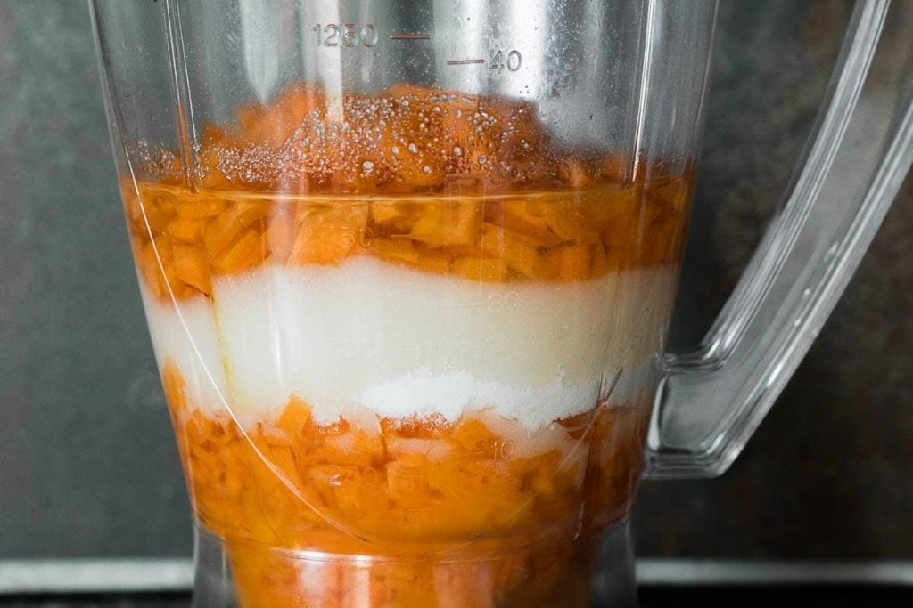
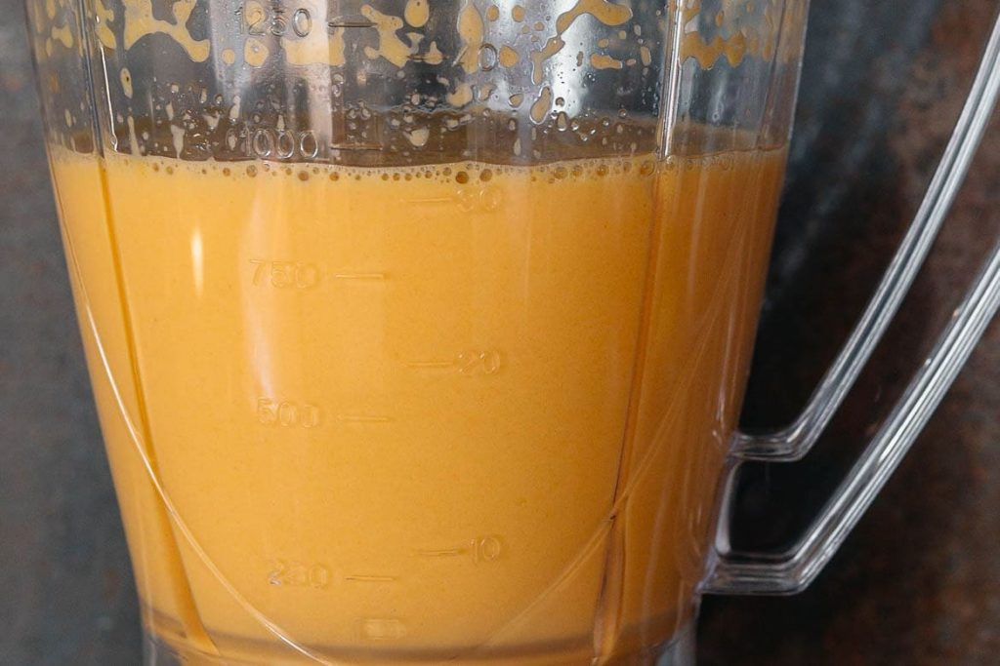
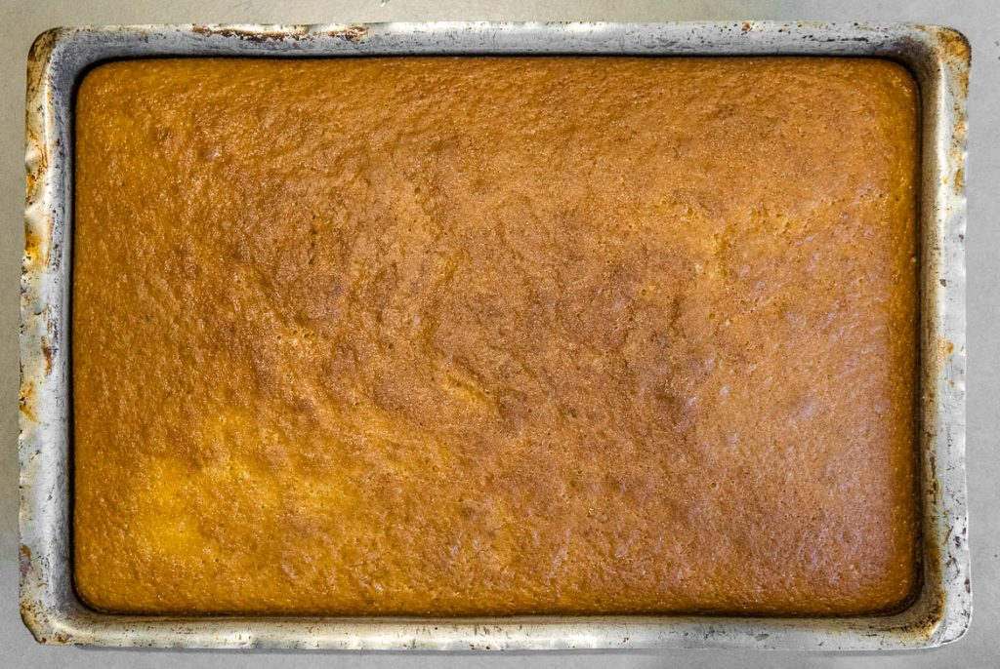
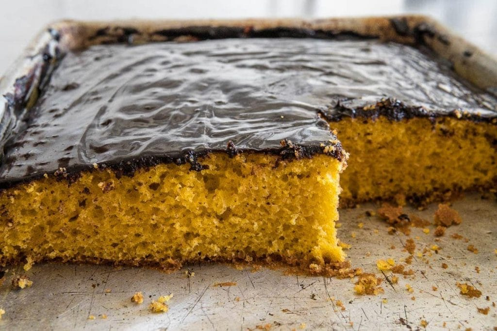
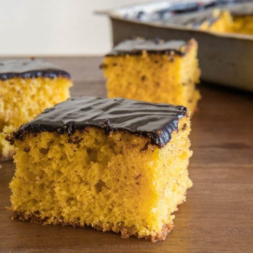

Bolo de cenoura tradicional fácil de fazer. A primeira parte da receita é feita no liquidificador, depois a massa é finalizada na mão, garantia de uma bolo fofinho. A cobertura de chocolate fica durinha e intensa.
Toda família brasileira tem uma receita de bolo de cenoura para chamar de sua. Adaptei essa receita do caderno de receitas da minha avó para ter medidas mais específicas e garantir um bolo sempre fofinho.
Por sinal, se você é brasileiro, pode se orgulhar do bolo de cenoura com cobertura de chocolate pois além de ser uma memória afetiva para todos nós, a versão brasileira é única.
A versão mais comum de bolo de cenoura ao redor do mundo é feita com cenoura ralada e especiarias na massa e com cobertura de creme de queijo. Claro que também é uma receita deliciosa e interessante, mas sou fã da ideia de contrastar o amargo do chocolate na cobertura com o sabor suave da massa.
Apesar desta receita ser super simples e prática (feita no liquidificador), existem alguns detalhes para fazer o bolo ficar macio.
Dicas para deixar o Bolo de Cenoura Fofinho
Use a quantidade certa de cenouras
Cenoura é um ingrediente denso, muita cenoura vai deixar a massa pesada e o bolo pode não crescer. Além disso, cada cenoura tem um tamanho diferente, logo, é importante medir as cenouras em peso ou xícaras (cortada pedaços pequenos) e não em unidades.
Evite grumos!
A massa do bolo precisa ser lisa e leve. Qualquer grumo na massa pode contribuir para que ela não cresça tão bem. Por isso é importante bater bem a cenoura e misturar bem a farinha. Aquela etapa de peneirar a farinha ajuda nisso.
Bolo de cenoura de liquidificador? Claro, mas só uma parte da receita.
Eu sei que é tentador bater todos os ingredientes no liquidificador, mas a massa desse bolo é densa demais para isso. A dica é bater no liquidificador apenas a cenoura, os ovos, o óleo e o açúcar. Depois, misturar delicadamente com a farinha e o fermento em uma tigela separada.
Pré-aqueça o forno, sempre que for assar bolos
A regra #1 para o sucesso de qualquer bolo é pré-aquecer o forno. Os fornos domésticos levam um tempinho para aquecer completamente. Por isso ligue o forno antes de tudo.
Ingredientes do bolo de cenoura no liquidificador
Bater os ingredientes do bolo de cenoura no liquidificador até obter uma massa homogênea
Bolo de cenoura assado sem a cobertura
Bolo de cenoura fofinho com cobertura de chocolate
Passo a passo para fazer bolo de cenoura
Cobertura de chocolate durinha ou cremosa? Qual você mais gosta?
A cobertura de chocolate desta receita é igual a da minha infância, mais durinha e com sabor intenso. Mas também dá para variar:
Cobertura cremosa: derreta uma barra de chocolate com manteiga e um pouco de creme de leite.
Cobertura de brigadeiro: faça uma receita de brigadeiro e adicione um pouco de creme de leite para deixar mais cremoso e conseguir cobrir o bolo.
A verdade é que não dá para errar muito na calda de chocolate.
Confira a receita e aprenda como fazer bolo de cenoura

Bolo de Cenoura Fofinho e Fácil
5 from 10 votes
Bolo de cenoura tradicional fácil de fazer. A primeira parte da receita é feita no liquidificador, depois a massa é finalizada na mão, garantia de uma bolo fofinho. A cobertura de chocolate fica durinha e intensa.
2xíc.cenoura - em cubos pequenos (aprox. 3 cenouras médias)
3ovos
1xíc.óleo vegetal - neutro
1 ½xíc.açúcar refinado
2xíc.farinha de trigo
1colher (sopa)fermento em pó
pitada de sal
manteiga e farinha de trigo - para untar a forma
Cobertura de Chocolate
2colheres (sopa)manteiga
1xíc.chocolate em pó
4colheres (sopa)açúcar refinado
½xíc.leite
Instruções
Bolo
Pré aqueça o forno a 180ºC. Unte a forma com manteiga, polvilhe com farinha de trigo e tire o excesso.
Em uma tigela grande, peneire a farinha de trigo, o fermento e o sal.
Junte no liquidificador a cenoura, o óleo, os ovos e açúcar. Bata até que fique completamente liso.
Transfira os ingredientes do liquidificador para a tigela de farinha.
Misture tudo delicadamente com um fouet ou espátula até obter uma mistura homogênea, sem nenhum grumo de farinha.
Transfira a massa para a forma untada e polvilhada.
Leve ao forno para assar por aprox. 45 min (Faça o teste: o bolo está pronto quando esperar um palito de dente no centro da forma e sair limpo)
Retire o bolo de forno e espera 10 min para desenformar e/ou colocar a cobertura.
Cobertura
Leve uma panela média ao fogo médio. Adicione a manteiga, o chocolate, o açúcar e derreta mexendo bem com uma espátula.
Quando o chocolate estiver derretido, adicione o leite e mexa até ferver.
Depois que ferver, espere mais uns 4 minutos, mexendo de vez em quando até a calda engrossar.
Retire do fogo e coloque a calda quente sob o bolo frio.
Espere uns 5 minutos e sirva.
VOCÊ VAI PRECISAR
Liquidificador
Tigelas de inox
Assadeira retangular funda
Peneira
Colheres medidoras
Comentários adicionais
Este bolo pode ser feito na forma de bolo tradicional- retangular média ou circular. Mas também fica lindo na forma de pudim com furo no centro ou na forma Bundt.